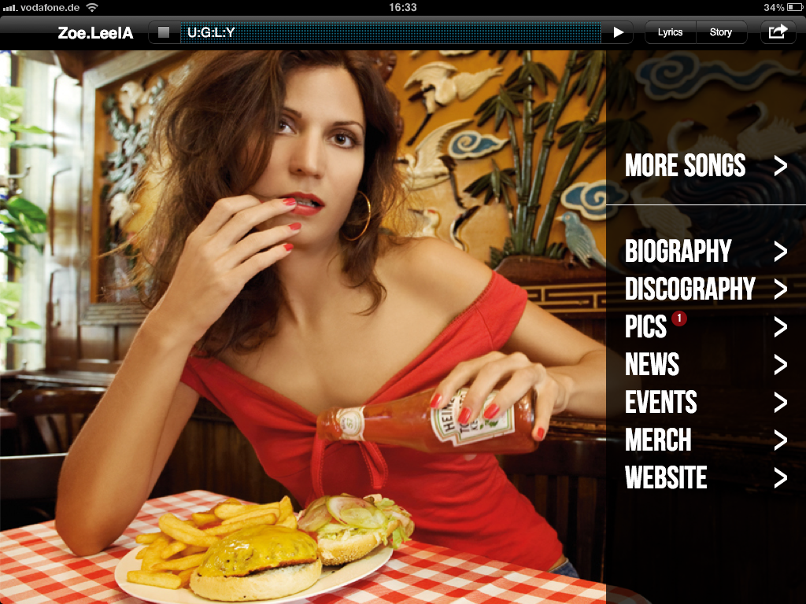
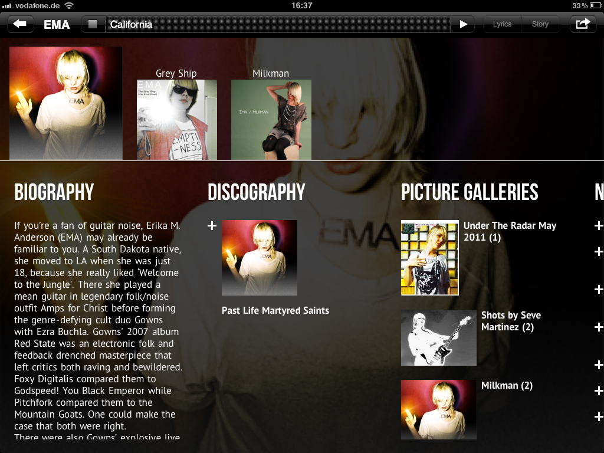
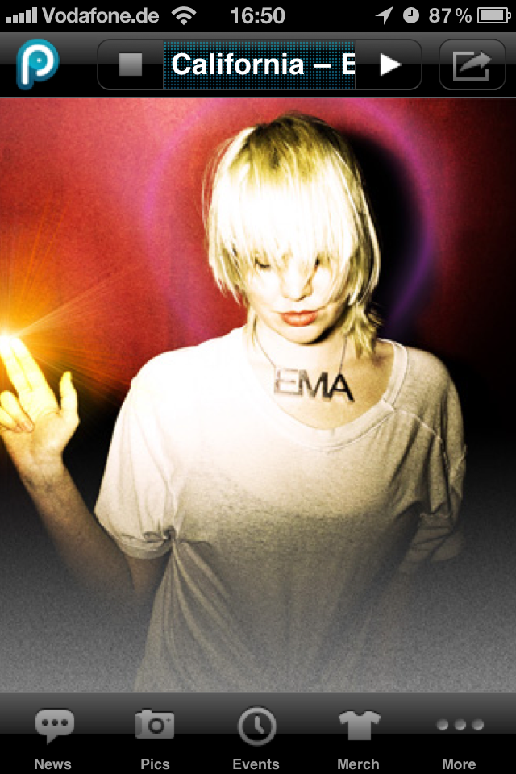

Besides being part of the digital music revolution at Winamp I joined a Munich-based startup called Songpier as lead developer. Songpier was a musician promotion platform that turned songs into an app for all primary platforms. Fans had free access to selected songs of an artist and were able to explore news buzz or shop tickets and merchandise.
Feature Highlights
- One stop—all screens: Turn a song into a web app for iOS, Android or the traditional desktop. All available with a single link
- Integration for Facebook pages and widgets for websites
- Easy publishing of everything around music: Events, news, videos, photo galleries and merchandise
- Analytics, import of data from existing platforms, sharing on social platforms
Focus of my Work
- Initial framework for an mobile HTML5 app including song playback
- Backend for artist-related content based on Symfony2 and Doctrine
- APIs for frontend and backend
- Usage tracking for advanced analytics
My journey at Songpier ended after I finished university and decided to join CQSE. Till then I had an exciting time writing the first line of code and going live with public releases. We also attained strategic partnership with several music labels like Sony Music, Nuclear Blast, The Orchard and SGC Media and served popular artists like Katy Perry, Célin Dion, Justin Timberlake, Nightwish, …
Showcase
As the service stopped around 2016, here are some screenshots and videos for further insights.


